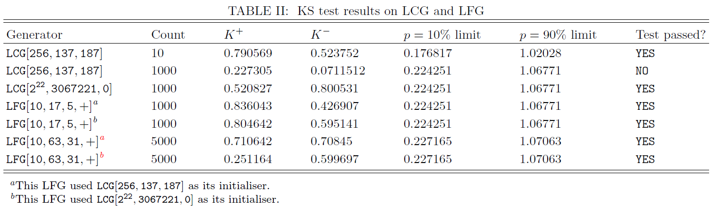
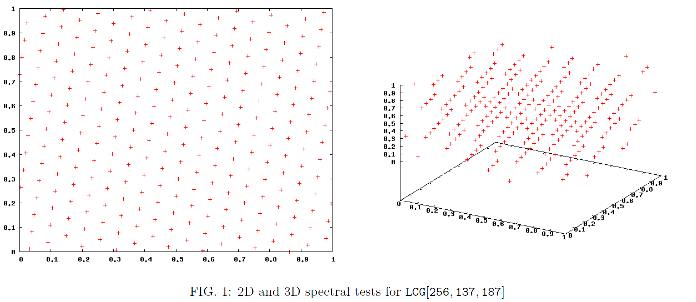
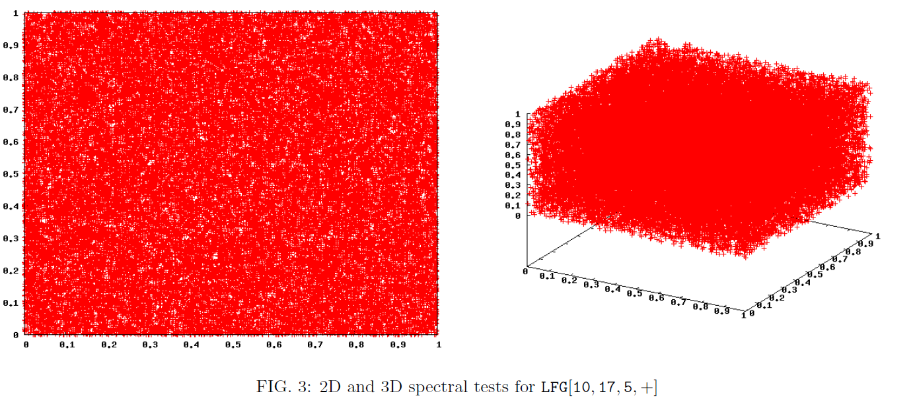
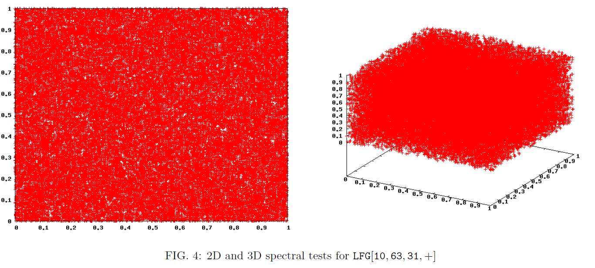

Random Number Generators
A brief look at generating and testing (pseudo) random numbers
05/01/16
This first project is just a rehash of some of my university studies that I thought would be interesting to show in lieu of an explored dataset whilst I continue the setup of this website (see blog post). The generation of random numbers is very important to statistical tests, and an improper implementation or algorithm used can lead to improper conclusions on studies, security exploits, and beating online poker games.
This topic is huge, so I'm just going to cover a few basic pseudo-random number generators with uniform and non-uniform distributions, how to test their quality, and some applications in the form of Monte Carlo integration. As the course I'm basing this post on is still taught, I may be vague in places and will not be uploading/linking my source code.
Uniformly Distributed Random Numbers
Truly random numbers are difficult, if not impossible, to generate with modern, deterministic computers (although it is possible if coupled with a random physical process such as atmospheric noise or radioactive decay). We use the term "pseudo-random number generator" (PRNG) to ensure this is clear. For many purposes though, PRNGs properly implemented are sufficient.
One of the properties desired from a PRNG is uniformity, meaning the sequence of numbers should sample the allowed space (e.g. from 1 to 1000) evenly, without oversampling regions or sparseness. Here I'll demonstrate two types of PRNGs and test their uniformity.
Linear Congruential Generators
Linear Congruential Generators (LCGs)
create a sequence using the following algorithm:
,
where is the modulus,
is the multiplier,
is the additive constant or increment,
and
is the initial value or seed.
We can denote a particular LCG as
Read here for more info.
Lagged Fibonacci Generators
Lagged Fibonacci Generators (LFGs),
based on the famous Fibonacci sequence
,
create a number sequence
using the following algorithm:
,
denoted here as ,
where
are the lags,
is the base,
are the initial seeds,
and
is one of the following operations:
I won't be exploring these two PRNGs in much more detail in the interest of keeping this post a reasonable length. I will, however, show a few ways to test these for quality of randomness.
Testing Random Numbers using Statistics
Humans are poor judges of randomness, and in fact, tend to see patterns where none exist (see for example the clustering illusion and pareidolia). Fortunately we have an abundance of statistical tests at our disposal to help determine if a sequence of numbers is random, and here I will look at two of these. I will again just define and briefly explain these.
The Kolmogorov-Smirnov Test
The Kolmogorov-Smirnov test (KS test) is a statistical test that checks how close some computed data is to a given continuous function. If the data is too close (i.e. exactly the same) the KS test will return small numbers that indicate our data too perfect a match and therefore not actually randomly distributed. On the other hand, if the data is distributed too differently to the desired function then the KS test will return a high value indicating this. To determine whether one's data is sufficiently random one can refer to a lookup table or use the expression
,
where and
is the desired probability. The actual KS test that describes ones data is given by
and
,
where is the CDF of the function against which one is checking
their data
.
Using the KS test, I can check whether LCGs and LFGs produce an approximately uniform distribution of random numbers. I wrote these programs in C++, and the results are displayed in Table II below (there is no Table I in this post, this is just a screenshot from some earlier work of mine). I tested two LCGs and two LFGs, the "Count" column showing how many numbers were tested with the generators. If the K statistics fall within the 10% and 90% limits (as calculated using the expression above), the number sequence generated is said to be sufficiently random. 
From the table, does not appear to be very good. It passes the KS test only when using a very small sample size (example here is 10), but fails for larger sample sizes (beginning somewhere between 10 and 100). This isn't very surprising considering the small modulus of this LCG, which gives it a small period, and since it is recommended that one only use
of the numbers generated, this leaves a smaller amount of numbers still. The second LCG tested,
, has a much larger modulus and thus period, and passed the KS test at the 10% and 90% limits for the ~4 orders of magnitude I looked tested it on.
The table also shows examples of two different LFGs, and
, both of which give maximal periods. Since the different LCGs gave different results, I thought it would be interesting to seed each of these LFGs with the two different LCGs. All tests of the LFGs passed the KS test. I've shown a different count number for the last two just for interests sake and to see show that the percentage limits change for different count numbers. From these results it seems that LCGs are not effective when used with a small modulus, although may potentially acceptable with a large modulus. The LFGs appear to produce an approximately uniform distribution of random numbers according to the KS tests, although the modulos used were much higher than 256. A more rigorous test would check both algorithms over a large range of moduli, arguments, output lengths, and operations for the LFG. The spectral test provides further evaluation of the effectiveness of these algorithms.
The Spectral Test
Some of the LCGs from earlier passed the KS test, indicating they are distributed uniformly. However, are they distributed uniformly in a random fashion or is there some sort of pattern to the way in which they are distributed?
The spectral test is a simple way to visually inspect the output of pseudo-random number generators like the LCG and LFG, plotting them to see if they have obvious trends or patterns that would show them to be clearly non-random. It does this by testing the joint distribution of consecutive elements of a sequence. If we have a sequence of
of period
, then we analyse the set of all
points
in -dimensional space.
For the 2D distribution this means plotting the successive points , and for 3D using
. I created these plots using Gnuplot in both 2D and 3D for the two LCGs and LFGs looked at earlier, and have displayed them below.



We can see clearly in Fig 1 that has obvious pattern in both the 2D and 3D spectral tests, and so fails each. In Fig 2,
could potentially pass the 2D test, though it is difficult to say visually whether the appearance of some faint lines and bunching of points is genuine or actually random. When we increase the dimension to 3D however, we see very obvious structure in the form of discrete parallel planes, showing the importance of inspecting higher dimensions for trends. This LCG therefore also fails the spectral test.
In Figs 3 and 4 it appears that
and
both pass a visual inspection for 2D and 3D.
This discovery that what may appear random and pass statistical tests in one dimension can actually be correlated in another is one I personally find really cool. A popular random number generator called RANDU, an LCG, was distributed in the 1960s by IBM and was found to badly fail the spectral test in dimensions higher than 2, displaying similar behaviour to the example above.
This has become longer and taken more time than I thought, so while I'll leave them out for now, I may later add a section on non-uniform random number generation and apply this in the form of Monte Carlo integration, an integration technique that uses stochastic processes rather than deterministic numerical integration.
Conor